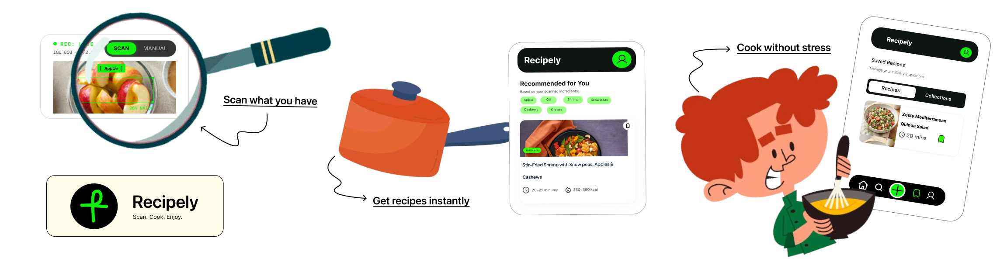
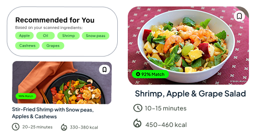
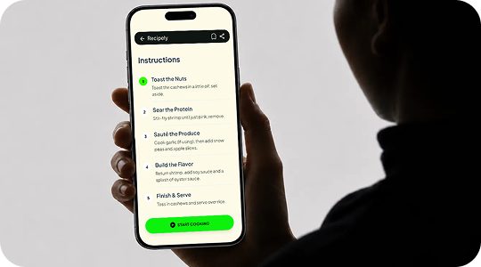
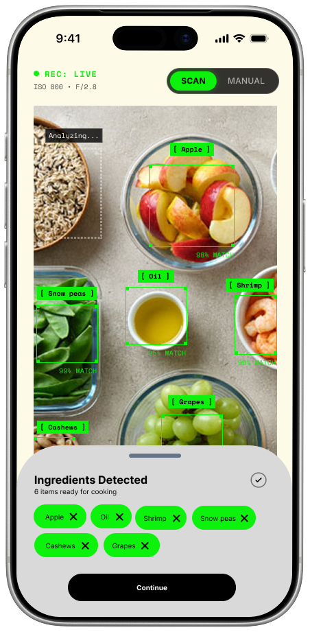
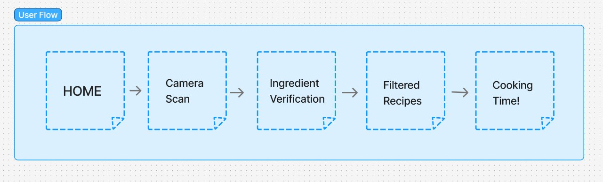
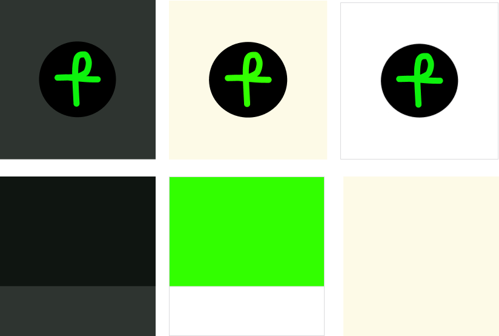
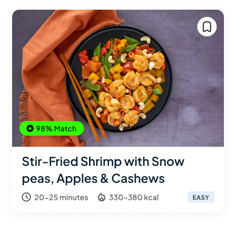
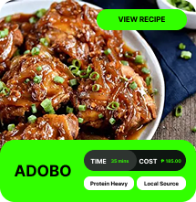
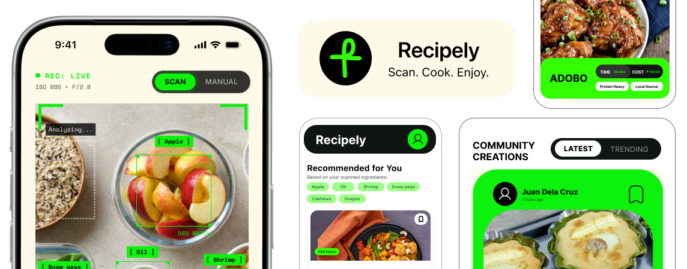

Recipely — Scan. Cook. Enjoy
I designed Recipely as a passion project. It is a recipe app focused on making home cooking simple, accessible, and enjoyable for everyone.
Visual Designer
FigJam
Notion
Interaction Design
Visual Design
Deciding what to cook is tricky
Having spent time living in a boarding house, I know from experience that figuring out what to eat is tough. Cooking your own meals is no doubt the best way to save money and eat well, but it's really difficult to find recipes that actually match the random leftover ingredients you already have in your kitchen.
Instant culinary inspiration from the ingredients you already own
The main thing that prevents people from cooking at home is that most of the time, recipe apps are either:
- Search-based and assume you already know exactly what you want to cook, or
- Filled with complex recipes requiring long lists of ingredients you don't have.
As a solution, I designed Recipely to generate personalized meal ideas based exactly on what is in your fridge — using an AI camera scanner that instantly recognizes your leftover ingredients. This way, we can eliminate the friction of manual data entry and deliver highly matchable recipes so users can start cooking without needing an extra trip to the grocery store.
Scan, don't type
Instantly detect leftover ingredients using your camera — no manual data entry required.

Match what you have
See exactly which recipes you can cook right now with clear visual match indicators.

Stay in the flow
A high-contrast, distraction-free cooking mode designed for messy hands and busy kitchens.

Built to make home cooking completely seamless and stress-free.
Recipely's interface was built to eliminate the most common pain points of home cooking. From instantly recognizing ingredients to guiding you through messy cooking steps, every feature is tailored specifically for real-world kitchen environments.
Camera-First Workflow
A prominent scanning UI that detects your leftover ingredients instantly, prioritizing speed over manual data entry.
Smart Recipe Recommendations
Instantly get AI-powered recipe suggestions based on your scanned ingredients, completely eliminating the guesswork of what to cook.
Save & Organize Favorites
A simple bookmarking system to save the recipes you love and build a personalized digital cookbook for quick access.
Social Recipe Feed
An interactive community newsfeed where you can share your culinary creations, connect with friends, and discover fresh inspiration.

Information Architecture & User Flow
Before jumping into high-fidelity screens, I mapped the complete user journey in FigJam to ensure the scanning-to-cooking pipeline required minimum friction. Every touchpoint was designed with user-centered principles — reducing cognitive load and ensuring intuitive navigation.

Establishing a cohesive visual identity
To ensure visual consistency and a seamless user experience across the app, a comprehensive design system was established. This system includes a clean modern typeface, structured UI components, and a high-contrast color palette optimized for visibility in active kitchen environments.
Color Palette

Typography
UI Components
Primary
Input Fields
Recipely Cards



What I've Learned
Building an app for real kitchen environments is a unique challenge.
Accessibility is a necessity
Designing for a kitchen taught me that UI must be highly glanceable. When hands are messy, high-contrast states and hands-free interactions become essential, not optional.
Simplicity beats complexity
I learned that users don't want endless menus. They want to scan, match, and cook. I focused on scanner speed and instant matching as the core user experience.
Designing for sustainability
Beyond cooking, Recipely is about reducing food waste. I learned that designing subtle visual rewards (like showing users how many ingredients they saved from going to waste) can gently encourage eco-friendly habits in a positive way.
What's Next?
Future features currently on the Recipely roadmap.
AI Budget-Based Planning
UI dashboards that suggest recipes matching a user's budget, displaying local market prices, and giving a clear cost breakdown of every dish.
Pantry Expiration Tracking
Alert components and push notification layouts for expiring ingredients—helping users reduce food waste through timely, intuitive nudges.
Voice-Guided Cooking
Hands-free UI states and voice accessibility patterns for the active cooking mode, allowing users to navigate instructions easily without touching the screen.
